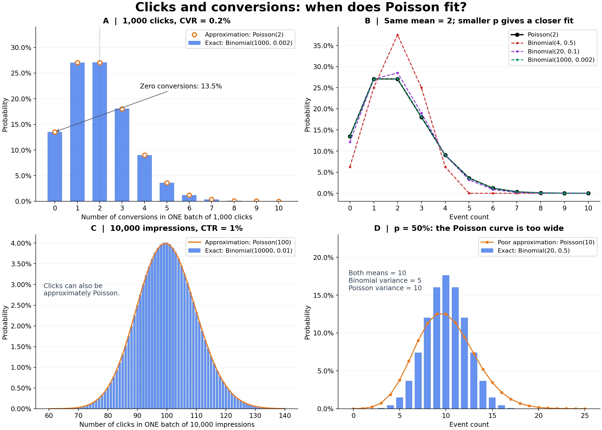
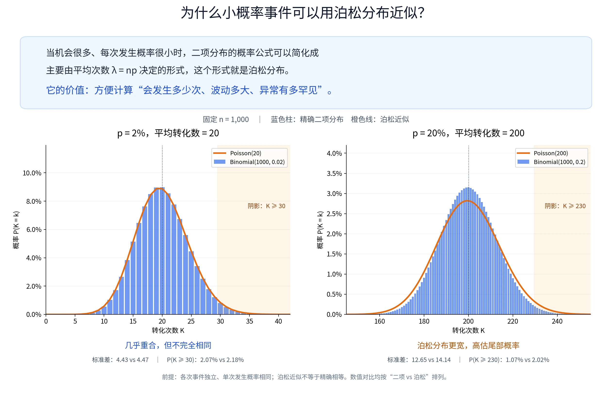

预期 2 次转化，为什么可能一次都没有？
从二项分布到泊松近似，讲清它在广告系统中的用法与边界。
2026-11-06 · beyondmeteor · 约 15 分钟 · 所有投放数字均为教学示例，不是线上效果报告。
一个广告组拿到了 1,000 次点击，模型给出的平均转化概率是 0.2%。预计转化数为 2，实际却是 0。应该怀疑模型、检查埋点，还是再等等？
如果只看“实际转化数比预期少了 100%”，这看起来很严重。可在一个独立小概率事件模型下，零转化的概率约为 13.5%，并不罕见。要判断这件事，除了平均数，还需要知道结果会怎样波动。
这里的“近似”不能省略；均值也不能代替对独立性、标签口径和模型误差的检查。
一、单次是伯努利，多次相加才是计数
先采用一个明确的口径：每次点击在约定的归因窗口内，最多记一次转化；各次结果独立，转化概率相同，均为 p。令 Xi 表示第 i 次点击是否转化：转化为 1，否则为 0。这是伯努利随机变量。
E[K] = np，Var(K) = np(1 − p)
K 是实际转化数，可能为 0、1、2……；E[K] 是长期重复同类投放时的平均数。在上述假设下，二项分布是精确模型，无论 p 是 0.2%、20% 还是 90%。[1]
| 量 | 含义 | 例子 |
|---|---|---|
| n | 点击次数 | 1,000 |
| p | 单次转化概率 | 0.002 |
| K | 实际转化数，随机 | 0、1、2、3…… |
| λ := np | 预期转化数，给定参数后确定 | 2 |
把 np 记作 λ，只是为平均数取一个符号，并没有要求它永远不变。E[K] = 2 也不意味着 K = 2。泊松近似下，恰好 0、1、2 次转化的概率分别约为 13.53%、27.07%、27.07%。
二、为什么会出现泊松公式
二项分布中，恰好 k 次成功的概率是：
C(n,k) 表示从 n 次机会中选出 k 次的方法数。令 p = λ/n，保持 λ 为有限正数，让 n 趋向无穷。对于固定的 k：
= (λk/k!) × 1 × (1 − 1/n) × ⋯ × (1 − (k−1)/n)
→ λk/k!
(1 − λ/n)n−k → e−λ
两部分相乘，得到：
这就是泊松概率质量函数。[2]直观地说：机会越来越多，每次成功越来越难，但平均成功次数保持相同；机会数和单次概率的具体组合对分布的影响逐渐消失。
“保持 λ 不变”是推导条件，不是投放规律
为了得到同一个 Poisson(2)，可以依次考虑 Binomial(100, 0.02)、Binomial(1000, 0.002)、Binomial(10000, 0.0002)。它们都是平均 2 次，但分布越来越接近。严格的极限定理只要求 n pn → λ，不要求每一步都恰好相等。
这并不是说，真实广告的点击次数增加会导致 CVR 下降。真实 CVR 如果固定为 0.2%，点击数增加时，平均数当然增加：
| 点击数 | CVR | 精确二项模型 | 对应泊松近似 |
|---|---|---|---|
| 1,000 | 0.2% | Binomial(1000, 0.002) | Poisson(2) |
| 5,000 | 0.2% | Binomial(5000, 0.002) | Poisson(10) |
| 10,000 | 0.2% | Binomial(10000, 0.002) | Poisson(20) |
教材讨论的是“一系列分布趋向同一个固定分布”；工程应用做的是“每组数据分别找一个足够接近的分布”。固定 p 后，仅增加 n，不能据此断言泊松近似误差趋于零。这也不是要求所有广告组共享同一个 λ。


三、为什么 p = 2% 很接近，p = 20% 就差一些
泊松近似匹配的是均值 λ = np。它同时规定方差也等于 λ，而二项分布的方差多了一个 (1−p)。因此，p 越小，这个差别通常越小。方差比较能解释图形的宽窄，但单凭方差接近，不能证明整个分布接近。
| 模型 | 均值 | 方差 | 标准差 |
|---|---|---|---|
| Binomial(1000,0.02) | 20 | 19.6 | 4.43 |
| Poisson(20) | 20 | 20 | 4.47 |
| Binomial(1000,0.2) | 200 | 160 | 12.65 |
| Poisson(200) | 200 | 200 | 14.14 |


“近似是否够用”还取决于你要算什么。p = 2% 时，至少 30 次转化的概率，二项模型为 2.070%，泊松模型为 2.182%。p = 20% 时，至少 230 次转化的概率分别为 1.074% 和 2.023%，后者接近前者的两倍。即使整条曲线看上去相似，尾部的相对误差也可能影响告警。
因此不必把 p = 20% 理解为某条绝对禁用线；应看用途和误差容忍度。现代计算库可以直接算二项概率，已知 n、p 时没有必要强行近似。若 n 很大且 np 与 n(1−p) 都足够大，带连续性修正的正态近似也是选项。
四、点击和转化没有特殊的数学区别
| 计数 | 一次机会 | 单次概率 | 小概率时的近似参数 |
|---|---|---|---|
| 点击数 | 一次曝光 | CTR | 曝光数 × CTR |
| 转化数 | 一次点击 | 点击后 CVR | 点击数 × CVR |
判断能否使用泊松近似的依据是事件生成机制，不是它叫“点击”还是“转化”。例如 10,000 次曝光、CTR 为 1%，点击数可以从 Binomial(10000,0.01) 近似为 Poisson(100)。“稀有”描述单次概率，不要求总事件数很少。
真实 pConv 模型会为每次点击给出不同的 pi。独立但不同概率的二元变量之和，精确地说是泊松二项分布；当各个 pi 都很小时，可考虑 Poisson(Σpi) 近似。无论是否独立，期望总数始终是 Σpi；独立性是进一步描述计数分布时的条件。
固定次数与固定时间窗口，也要分清
若一小时曝光数本身服从 Poisson(μ)，每次曝光又以固定概率 p 独立产生点击，则点击数精确服从 Poisson(μp)。这叫泊松稀疏化，不要求 p 很小。它的前提是曝光计数的泊松模型和独立筛选机制成立，而不是“所有一小时流量都天然服从泊松”。
独立渠道相加，得到的不只是总平均数
假设 A、B 两个渠道的计数相互独立，分别服从 Poisson(3)、Poisson(5)，则总数服从 Poisson(8)。可以从卷积直接验证：
= Σj=0…k [e−33j/j!] [e−55k−j/(k−j)!]
= e−8/k! × Σj=0…k C(k,j)3j5k−j
= e−88k/k!
最后一步用了二项式定理。如果分渠道模型只是近似，合计结论也只是近似。
“3 + 5 = 8”本身没有特殊业务价值，期望相加根本不需要泊松分布。额外收益是合计后的整个分布仍已知，可继续计算目标达成概率和尾部概率。比如三个独立渠道预期分别为 3、5、2，合计 Poisson(10) 下，至少 8 次的概率约为 78.0%，最多 5 次约为 6.7%。
这可以帮助在广告组、媒体、广告主之间汇总监控。但它不会告诉你“把预算从 A 移到 B 会多出几单”。预算变化可能同时改变流量规模、用户组成和 CVR，因果增量与预算响应需要另行建模。
五、一个真正具体的用途：同样少了 50%，先查谁
考虑两个广告组，标签窗口已经成熟，模型预测也经过历史校准：
| 广告组 | 预期 | 实际 | 相对偏差 | 泊松模型下出现该结果或更低的概率 |
|---|---|---|---|---|
| A | 2 | 1 | −50% | P(K ≤ 1 | λ=2) = 40.60% |
| B | 20 | 10 | −50% | P(K ≤ 10 | λ=20) = 1.08% |
同一个偏差比例，背后的随机波动意义不同。A 的结果很常见；B 更值得排查。这里的 1.08% 是“在给定模型下，这么低或更低的计数出现的概率”，不是“系统正常的概率”，也不是故障后验概率。
泊松模型还给出相对标准差 1/√λ：预期只有 4 次时为 50%，预期 100 次时为 10%。这解释了低转化量广告组为什么容易大起大落，也说明统一的百分比告警阈值为什么不够合理。
一条可实现的监控链路
- 记录预测。保存 click_id、媒体、广告组、时间、模型版本和 pConv；模型目标应与后续标签定义一致。
- 对齐标签。使用成熟的点击 cohort 和归因窗口，对订单或事件去重，确认每条样本仍是 0/1 口径。
- 分组汇总。按媒体 × 广告组 × 日期计算预期 λ̂ = Σpi 和实际 K = Σyi。
- 计算下尾概率。使用 P(X ≤ K | λ̂) 排查转化不足；查转化异常升高时计算上尾，方向应预先定义。
- 用历史数据校准。按流量规模、媒体、时段观察误报率；多分组扫描要控制多重检验，反复随时间查看还要考虑序贯监控。
这是一种可实施的基线设计，不是本文声称已在某广告平台上线的方案。λ̂ 来自模型，包含校准误差和估计不确定性；直接把它当已知真值计算出的概率，不自动拥有理想检验的误报率。监控系统应先验证这一点，再决定是否告警，更不能仅凭一次小概率自动停投。
六、跨媒体应用的难点，往往在泊松公式之外
先有统一口径，再谈相加
同一个用户先看信息流、再点搜索、最后下一单，两个媒体可能各报一次转化。直接相加得到 2，不代表广告主实际获得了两个订单。要先明确统计的是媒体报表、去重订单，还是归因贡献，并统一身份、事件和时间窗口。
多触点归因给 A 记 0.3、B 记 0.7，这些是贡献权重，不是整数事件计数，不能直接声明为普通泊松变量。一个点击能带来多次购买时，也已超出前面的二元标签假设，应重新定义计数模型。
相关性和预测误差，会让尾部变厚
促销、库存变化和网站故障会同时影响不同渠道。同一用户的多次行为也可能相关。总方差应包含协方差：
此外，即使给定真实强度 Λ 时计数是泊松的，混合不同强度后也有 Var(K) = E[Λ] + Var(Λ)。因此，不同流量条件混在一起、或强度本身不确定，都可能让观察方差大于均值。应先建模可解释的共同因素；若剩余波动仍过大，再评估负二项、分层模型或经验预测区间。不要在不同均值的桶上直接比较原始方差与均值，就断言泊松假设失效。
“尚未转化”与“最终不转化”不同
不能用今天尚未成熟的回传数，直接对比模型预测的最终转化数。简单基线可以等待窗口成熟；如果要实时监控，就需要对齐截至当前时刻应观察到的数量。例如已建模每次最终转化的延迟 CDF Fi(a)，则当前可观察转化的期望可写成 ΣpiFi(ai)，同时保证延迟定义、截断与标签口径一致。
有公开研究证据，但不要推断成线上实现
Google 作者在 2024 年发表的 A Time To Event Framework For Multi-touch Attribution 使用非齐次泊松过程描述转化，结合时间变化的广告影响和未完整观察的数据，再分配归因贡献。论文区分了观察相关性与随机实验支持的因果估计。这是泊松方法用于广告归因的研究证据，不是“各媒体独立求和”的生产实现证明。[3]
泊松分布最适合回答的是：在一个明确的平均水平和事件模型下，这样的计数有多常见。模型是否准确、订单算给谁、某个媒体到底带来了多少增量，是另外的工程和因果问题。
七、用几十行代码验证，不必只相信曲线
下列计算可直接复现文中的关键概率。上尾用 sf(k-1) 表示“至少 k 次”，避免把严格大于与大于等于混淆。
from scipy.stats import binom, poisson
# P(K >= threshold): exact vs approximation
for p, threshold in [(0.02, 30), (0.2, 230)]:
n = 1000
print(binom.sf(threshold - 1, n, p),
poisson.sf(threshold - 1, n * p))
# Same -50% deviation, different evidence
print(poisson.cdf(1, 2)) # 0.4060058497
print(poisson.cdf(10, 20)) # 0.0108117188下载完整 Python 复现脚本：输出本文的数值、总变差距离，并可重绘两组分布对比图。两张正文插图来自本次讨论中的计算绘图。代码只使用教学参数，不包含广告账户数据。
Two Expected Conversions, Yet None Arrive
Poisson approximations in advertising: what they explain, where they help, and where the assumptions break.
2026-11-06 · beyondmeteor · All campaign numbers are illustrative, not production results.
A campaign receives 1,000 clicks with a conversion probability of 0.2% per click. Its expected conversion count is two, but the observed count is zero. Is the model broken? Under an independent rare-event model, zero has a probability of about 13.5%. A mean alone cannot tell us how surprising an observation is.
1. Start with the exact count model
Assume a fixed number of clicks n, at most one conversion per click within a defined attribution window, independent outcomes, and the same conversion probability p. Each click has a Bernoulli label Xi. Their sum is binomial for any p, including 20% or 90%.
E[K] = np，Var(K) = np(1−p)
K is random; np is its expected value. Writing λ := np names the mean without requiring it to remain constant. An expected count of two does not mean that two must occur. Under Poisson(2), probabilities of zero, one, and two are approximately 13.53%, 27.07%, and 27.07%. See the exact binomial definition in [1].
2. A limiting theorem is not the same as a finite-data approximation
The binomial probability mass function is C(n,k)pk(1−p)n−k. Set p = λ/n and let n grow while λ stays finite and positive. For each fixed k:
(1−λ/n)n−k → e−λ
P(K=k) → e−λλk/k!
The last expression defines Poisson(λ).[2] The theorem constructs a sequence approaching one fixed distribution. For example, Binomial(100,0.02), Binomial(1000,0.002), and Binomial(10000,0.0002) all have mean two and get closer to Poisson(2). More generally, n pn only needs to converge to λ.
This is a mathematical construction, not a claim that adding clicks reduces CVR. If real CVR stays at 0.2%, increasing clicks from 1,000 to 5,000 to 10,000 changes the means from 2 to 10 to 20. We can separately approximate those three binomial distributions by Poisson(2), Poisson(10), and Poisson(20). We are not claiming convergence to the same fixed distribution. Increasing n alone at fixed p does not establish vanishing approximation error.
3. What changes between p = 2% and p = 20%?
The Poisson model matches the mean np but sets the variance to np, while the binomial variance is np(1−p). For n = 1,000 and p = 2%, standard deviations are 4.43 versus 4.47. At p = 20%, they are 12.65 versus 14.14. Variance explains the width difference, but matching moments alone does not prove distributions are close.
| Case | Exact binomial tail | Poisson tail |
|---|---|---|
| p = 2%, K ≥ 30 | 2.070% | 2.182% |
| p = 20%, K ≥ 230 | 1.074% | 2.023% |
In the second case the tail is almost doubled. “Close enough” depends on the probability being estimated and the allowed error, not a universal cutoff for p. Modern libraries compute exact binomial probabilities efficiently. A normal approximation with continuity correction is another option when both np and n(1−p) are sufficiently large.
4. Clicks and conversions have the same mathematical structure
For clicks, one opportunity is an impression and p is CTR. For conversions, one opportunity is a click and p is post-click CVR. With independent identically distributed binary outcomes, both counts are binomial; both may admit a Poisson approximation. For 10,000 impressions and CTR = 1%, the approximate click distribution is Poisson(100). Rare refers to the per-opportunity probability, not necessarily a small total count.
When a pConv model outputs different probabilities pi, independent binary labels sum to a Poisson-binomial distribution. If individual probabilities are small, Poisson(Σpi) can be useful. The expectation Σpi is valid even without independence; the distributional approximation requires additional assumptions.
There is also a different, exact result: if impressions in a time window are Poisson(μ), and each is independently retained as a click with probability p, the click count is Poisson(μp). This thinning property does not require a small p. It requires the original Poisson model and independent retention.
5. Adding channels adds more than their means—if they are independent
If independent counts KA and KB are Poisson(3) and Poisson(5), their sum is Poisson(8). Convolving the two mass functions gives:
= e−8/k! × Σj=0…kC(k,j)3j5k−j
= e−88k/k!
The last step is the binomial theorem. Approximate component models yield an approximate total model. Summing expectations does not need Poisson or independence; preserving the complete Poisson distribution does. Three independent channels with expected counts 3, 5, and 2 give Poisson(10), with P(K ≥ 8) ≈ 78.0% and P(K ≤ 5) ≈ 6.7%.
This makes count monitoring easy to roll up across ad groups, media, and advertisers. It does not say how reallocating budget changes incremental conversions. Spend changes can alter both traffic volume and composition.
6. A concrete use: which 50% shortfall deserves investigation?
| Ad group | Expected | Observed | Shortfall | Poisson lower tail |
|---|---|---|---|---|
| A | 2 | 1 | 50% | P(K ≤ 1 | λ=2) = 40.60% |
| B | 20 | 10 | 50% | P(K ≤ 10 | λ=20) = 1.08% |
Assuming calibrated predictions and mature labels, group A's result is common; B deserves more attention. A lower-tail probability is not a posterior probability of a system fault. It is evidence conditional on the assumed model. Relative standard deviation is 1/√λ, so low-volume groups naturally fluctuate more.
A practical baseline records click IDs, media, ad groups, timestamps, model versions, and pConv. After labels mature, deduplicate and aggregate expected λ̂ = Σpi and observed K = Σyi in aligned groups. Compute lower tails for underperformance, then evaluate historical false-alarm rates across volume buckets, media, and time periods. Account for multiple testing and repeated monitoring.
This is a proposed baseline design, not a verified account of a platform's production system. Estimated λ̂ carries calibration and estimation errors. Plug-in tail probabilities do not automatically achieve nominal false-alarm rates, and should not directly trigger bid cuts or campaign shutdowns.
7. Where the model breaks
Attribution and duplicate events. A user may see a feed ad, click search, and place one order that both platforms claim. Define whether you count platform-reported conversions, deduplicated orders, or attribution credit. Credits of 0.3 and 0.7 are fractional weights, not ordinary Poisson counts. Multiple purchases per click also require revisiting the binary-label assumption.
Dependence and varying intensity. Promotions, inventory, site outages, and shared users can correlate channels. Total variance includes covariance terms. Even if K conditional on a latent intensity Λ is Poisson, its marginal variance is E[Λ] + Var(Λ), allowing more variability than a fixed-mean Poisson model. Condition on known drivers before considering negative-binomial, hierarchical, or empirical predictive models; raw variance across buckets with different means is not a valid standalone dispersion test.
Delayed feedback. Today's incomplete reported count cannot be compared directly with final-window expectations. Wait for mature cohorts or model the expected observed count at each age. With an appropriate conversion-delay CDF Fi(a), a binary-outcome baseline uses ΣpiFi(ai), with consistent censoring and attribution definitions.
Published evidence. The 2024 paper A Time To Event Framework For Multi-touch Attribution, by Google authors, models conversions with an inhomogeneous Poisson process and time-varying ad effects, handles incomplete observations, and assigns attribution credit. It distinguishes observational association from causal estimates supported by randomization. This documents a research application, not the independent-channel monitoring implementation proposed here.[3]
8. Reproduce the numbers
from scipy.stats import binom, poisson
for p, threshold in [(0.02, 30), (0.2, 230)]:
n = 1000
print(binom.sf(threshold - 1, n, p),
poisson.sf(threshold - 1, n * p))
print(poisson.cdf(1, 2)) # 0.4060058497
print(poisson.cdf(10, 20)) # 0.0108117188Download the full reproduction script for numerical results, total-variation distances, and an optional comparison plot. Use sf(k-1) for “at least k”; sf(k) means “strictly greater than k.” The article's figures are computed plots, not simulated campaign results.
参考资料 / References
- SciPy. scipy.stats.binom — 二项分布定义与概率计算 / Binomial definition and numerical methods.
- SciPy. scipy.stats.poisson — 泊松分布定义与概率计算 / Poisson definition and numerical methods.
- Shender, D., et al. (2024). A Time To Event Framework For Multi-touch Attribution. Journal of Data Science, 22(1), 56–76. DOI: 10.6339/23-JDS1101.
计算复现环境 / Numerical environment: Python, NumPy, SciPy, Matplotlib. Examples are illustrative; no private campaign data is included.